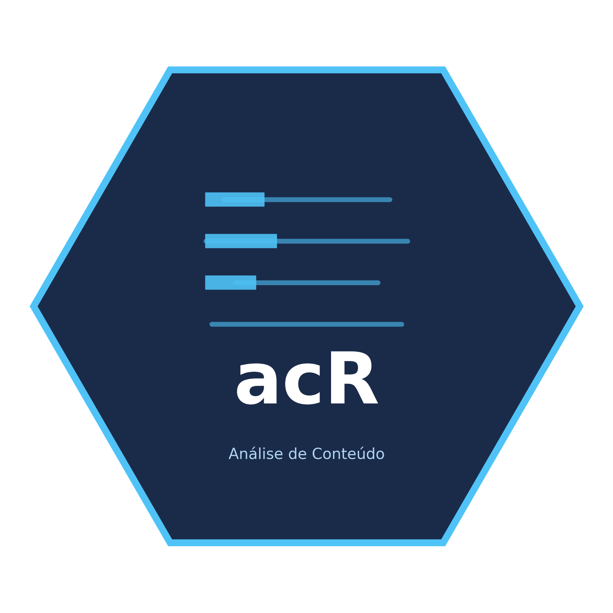

acR 
Análise de Conteúdo em R: pipeline integrado qualitativo (LLMs) e quantitativo, com visualizações modernas e foco em corpora brasileiros.
Visão geral
O acR oferece um pipeline integrado para análise de conteúdo, combinando:
- Análise qualitativa assistida por LLMs: codificação automatizada com codebooks versionados, métricas de confiabilidade entre codificador humano e LLM (Krippendorff α, Gwet AC1), calibração de incerteza e auditoria reproducível.
- Análise quantitativa clássica: estatísticas descritivas, keyness, co-ocorrência, nuvens de palavras (incluindo comparativa e X-ray), análise de sentimento (OpLexicon), e Latent Dirichlet Allocation (LDA).
-
Visualizações modernas: tema próprio em
ggplot2, paletas acessíveis, gráficos publicáveis. -
Foco em PT-BR: stopwords expandidas, codebooks validados para o contexto político-institucional brasileiro, integração com
geobr.
Instalação
A versão em desenvolvimento pode ser instalada diretamente do GitHub:
# install.packages("pak")
pak::pak("andersonheri/acR")Exemplo mínimo
O pacote está em fase inicial de desenvolvimento. Funções abaixo são ilustrativas da API planejada.
library(acR)
# Construir corpus a partir de um data.frame
corpus <- ac_corpus(
data = discursos_camara,
text = texto,
docid = id_discurso
)
# Pipeline quantitativo
corpus |>
ac_clean(remove_stopwords = "pt-br-extended") |>
ac_quant_keyness(target = partido == "PT", reference = partido == "PL") |>
ac_plot_keyness(n = 20)
# Pipeline qualitativo (LLM)
cb <- ac_qual_codebook("iliberalismo_br")
coded <- ac_qual_code(corpus, codebook = cb, model = "anthropic/claude-sonnet-4-5")Documentação
- Site do pacote: andersonheri.github.io/acR
- Vignettes (em desenvolvimento)
- Decisões arquiteturais:
inst/docs/adr/
Inspiração e diálogo
O acR reconhece dívida intelectual com:
-
quallmer(Maerz & Benoit, 2025) — pelo design do workflow de codificação assistida por LLMs. -
quanteda(Benoit et al.) — pela infraestrutura de análise textual quantitativa. -
ellmer(Wickham et al., Posit) — pelo backend unificado de LLMs. - OpLexicon (Souza & Vieira, 2012; PUCRS) — léxico de sentimento para PT-BR.
Como contribuir
Contribuições são bem-vindas. Veja CONTRIBUTING.md e o Código de Conduta.